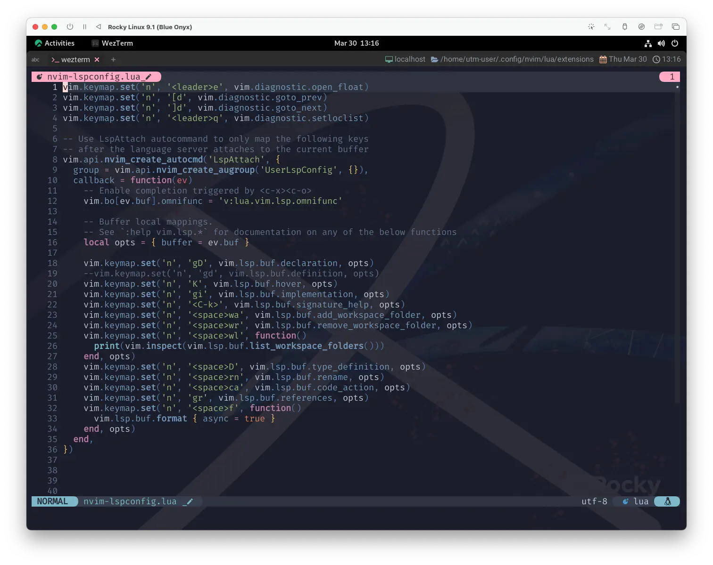

nvim-lspconfig
Configs for the Nvim LSP client (:help lsp).
Nvim LSP クライアント (:help lsp) のコンフィグです。
さて、まずはLSP活用の基盤を築きましょう❗nvim-lspconfigの登場です😆
And now, the end is near
And so I face the final curtain
そして今、終わりが近づいている
そして私は最後の幕に臨む
LSP
LSP client/framework lsp LSP
Nvim supports the Language Server Protocol (LSP), which means it acts as
a client to LSP servers and includes a Lua framework `vim.lsp` for building
enhanced LSP tools.
Nvim は Language Server Protocol (LSP) をサポートしており、
LSP サーバーのクライアントとして動作し、
拡張 LSP ツールを構築するための Lua フレームワーク `vim.lsp` を含んでいます。
https://microsoft.github.io/language-server-protocol/
LSP facilitates features like go-to-definition, find-references, hover,
completion, rename, format, refactor, etc., using semantic whole-project
analysis (unlike ctags).
LSPは、(ctags とは異なり) 意味論的なプロジェクト全体の分析を用いて、
go-to-definition、find-references、hover、completion、rename、format、refactor、
などの機能を容易にします。
本来ならここにある内容を自分で行っていく必要があるんですが、
「setupを呼んでくれるだけでいいよー」ってしてくれるのが、このnvim-lspconfigです。
LSP configs provided by nvim-lspconfig are listed below.
nvim-lspconfigが提供するLSPコンフィグを以下に示します。
要するに便利ってことです❗❗
Install
Requires neovim version 0.8 above.
neovim version 0.8 以上が必要です。
Install nvim-lspconfig like any other Vim plugin, e.g. with packer.nvim:
nvim-lspconfig は他の Vim プラグインと同様に、例えば packer.nvim でインストールしてください
なんかもう何を言ってるのか全然分かる😑
Configuration
nvim-lspconfig does not set keybindings or enable completion by default.
The following example configuration provides suggested keymaps for the most commonly used language server functions,
and manually triggered completion with omnifunc (
nvim-lspconfig はデフォルトでキーバインドを設定したり、補完を有効にしたりしません。
次の設定例では、最もよく使われる言語サーバ機能のキーマップを提案し、
omnifunc (
オフィシャルには、おっそろしく迅速にpyright、tsserver、rust_analyzer
1
のセットアップがされていますが、大胆にも、このサイトではこれらをスキップして、もっと汎用的な方法をとります❗
I traveled each and every highway
And more, much more than this
I did it my way.
私は、あらゆるハイウェイを旅した
そしてこれよりももっと、これ以上ないってくらい
わたしの道を旅したんだ
と、いうことで、ここではキーマップの設定だけしちゃいましょう😌
-- Global mappings.
-- See `:help vim.diagnostic.*` for documentation on any of the below functions
vim.keymap.set('n', '<space>e', vim.diagnostic.open_float)
vim.keymap.set('n', '[d', vim.diagnostic.goto_prev)
vim.keymap.set('n', ']d', vim.diagnostic.goto_next)
vim.keymap.set('n', '<space>q', vim.diagnostic.setloclist)
-- Use LspAttach autocommand to only map the following keys
-- after the language server attaches to the current buffer
vim.api.nvim_create_autocmd('LspAttach', {
group = vim.api.nvim_create_augroup('UserLspConfig', {}),
callback = function(ev)
-- Enable completion triggered by <c-x><c-o>
vim.bo[ev.buf].omnifunc = 'v:lua.vim.lsp.omnifunc'
-- Buffer local mappings.
-- See `:help vim.lsp.*` for documentation on any of the below functions
local opts = { buffer = ev.buf }
vim.keymap.set('n', 'gD', vim.lsp.buf.declaration, opts)
vim.keymap.set('n', 'gd', vim.lsp.buf.definition, opts)
vim.keymap.set('n', 'K', vim.lsp.buf.hover, opts)
vim.keymap.set('n', 'gi', vim.lsp.buf.implementation, opts)
vim.keymap.set('n', '<C-k>', vim.lsp.buf.signature_help, opts)
vim.keymap.set('n', '<space>wa', vim.lsp.buf.add_workspace_folder, opts)
vim.keymap.set('n', '<space>wr', vim.lsp.buf.remove_workspace_folder, opts)
vim.keymap.set('n', '<space>wl', function()
print(vim.inspect(vim.lsp.buf.list_workspace_folders()))
end, opts)
vim.keymap.set('n', '<space>D', vim.lsp.buf.type_definition, opts)
vim.keymap.set('n', '<space>rn', vim.lsp.buf.rename, opts)
vim.keymap.set('n', '<space>ca', vim.lsp.buf.code_action, opts)
vim.keymap.set('n', 'gr', vim.lsp.buf.references, opts)
vim.keymap.set('n', '<space>f', function()
vim.lsp.buf.format { async = true }
end, opts)
end,
})
いやー、ほんとにキーマップの設定だけなので、サンプルそのままでしたね😅
それだけ、面倒な設定をうまく包み込んでくれてるってことです。
っていうだけなのもつまんないので、ちょっとだけ...。
わたしは以下のキーマップだけ外して使ってます。
vim.keymap.set('n', 'gd', vim.lsp.buf.definition, opts)
これ、元の動作の方が使いやすいと思うのはわたしだけなのかな...。
ただ、お話し相手がいない状態なので、まだ何にもできないんですけどね😅
あとこれ、いつもの❗
use {
'neovim/nvim-lspconfig',
config = function() require 'extensions.nvim-lspconfig' end,
}
LspAttach
LspAttachってなんやねんってなりますが、これはもうそのままヘルプにあります。
LspAttach
After an LSP client attaches to a buffer.
LSPクライアントがバッファにアタッチした後 (に発生するイベント)。
久しぶりに現れたAutomatic Commandは、11章 に出てきたお話です。
いつだっておじさんは熱くアドバイスしてくれます☺️
うん。まず何よりもはっきりさせておきたいのは、auというのはautocmdの先頭2文字からきているようですね。
ここはもう "nvimトレーナー 2 " に任せておけば安心ですね。
I'll take you all.
ここはこれだけです。もう簡単でしょう❓ 
繰り返しになりますが、これだけではまだ何もできません。
大丈夫です、基盤なんで。どっしり構えましょう😤
...ん❓😑
え、ちょっと待って。
nvimトレーナーは "ｎｖｉｍチャンピオン" なの⁉️ いつの間に⁉️
わたしが遊んでたりサボってたり、Ohtani-saaaaaaan!!⚾とか Shazaaaaaaam!!🦸 とか叫んでたり、 Amazonのセールに合わせて自分へのご褒美を送ってあげたり受け取ったり、 なんか天気悪いなー🙄とか、さくらさくら〜🌸 とか、トリリオンゲーム6巻を読み耽っていた間にも
nvimトレーナーは努力を続けていたってこと⁉️
Yes, it was my way 3
そう、それが私の生きる道
...。😮
こうなったらお祝いだー❗❗🥳
ライバルどうし おかしいね
"まだまだ育てが 足りないぜ！"
それでも ホラ
選んだ道が 同じ道だから
"負けないぞ！"って いいながら
おなじ夢を 語り合う
宴もたけなわではございますが、わたしから一言。
1: それぞれ、Python、TypeScript、Rustの Language Server です。
3: My Way (by Frank Sinatra): 主人公の男性が、自分の死が近付く中、自分の人生で起こったすべての苦難に対して行ったことについて、 後悔せず自信を持っている、と語る内容である。Wikipediaより (もちろん、nvimトレーナーは目の前が真っ暗になることはあっても死ぬことはないです😉)